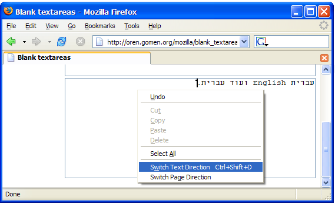
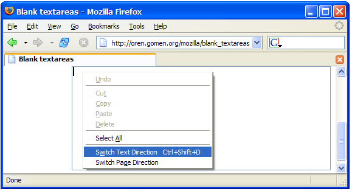
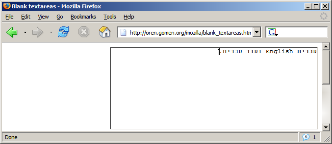
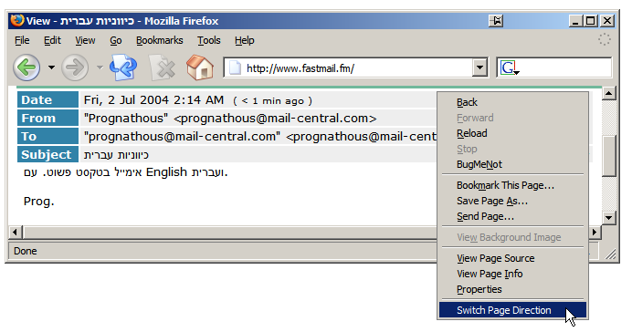
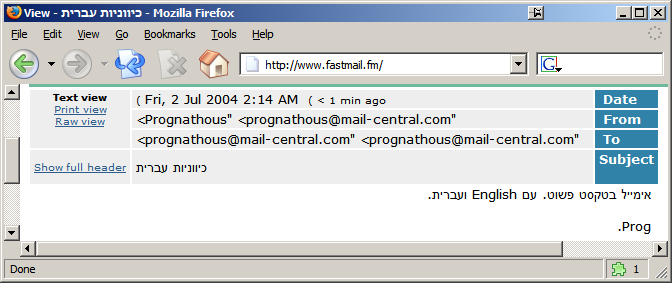

BiDi UI הינו תוסף ל-Mozilla ול-Mozilla Firefox, המאפשר לדוברי עברית (ושפות RTL אחרות) שליטה קלה על כיווניות דפים ותיבות טקסט.
התוסף תומך ב-Mozilla 1.7 וב-Firefox מגירסה 0.9 ומעלה ונבדק על Windows, Mac OS X ו-Linux.

בדומה לשליטה על כיווניות הדף (שמיועדת בעיקר לצפיה בטקסט קיים), התוסף מאפשר לשנות בקלות את כיווניות ויישור הטקסט של שדות טקסט. ניתן ליישר את סמן ההקלדה לצד הנגדי ע"י קיצור המקשים Ctrl+Shift+E (במק: Cmd+Shift+E) או ע"י שימוש בתפריט ההקשר של שדה הטקסט ובחירה ב-Switch Text Direction.

קל להבחין שסמן ההקלדה מופיע בצד הנגדי, ושכיווניות הטקסט משתנה בהתאם. מילים אנגליות בטקסט עברי לא פוגעות בסדר המשפט, וסימני הפיסוק מופיעים במקומות הנכונים:

שליטה על כיווניות דף נדרשת לעיתים קרובות כשמקבלים אימייל עברי מיושר לשמאל. באמצעות התוסף ניתן לפתור את הבעיה בקלות, ע"י שימוש בתפריט ההקשר של הדף ובחירה ב-Switch Page Direction. האפשרות הזו מופיעה גם בתפריט הראשי של התוכנה, תחת View.

ניתן לראות שלאחר שינוי הכיוון קל יותר לקרוא את הטקסט, וסדר המילים הנכון נשמר:
